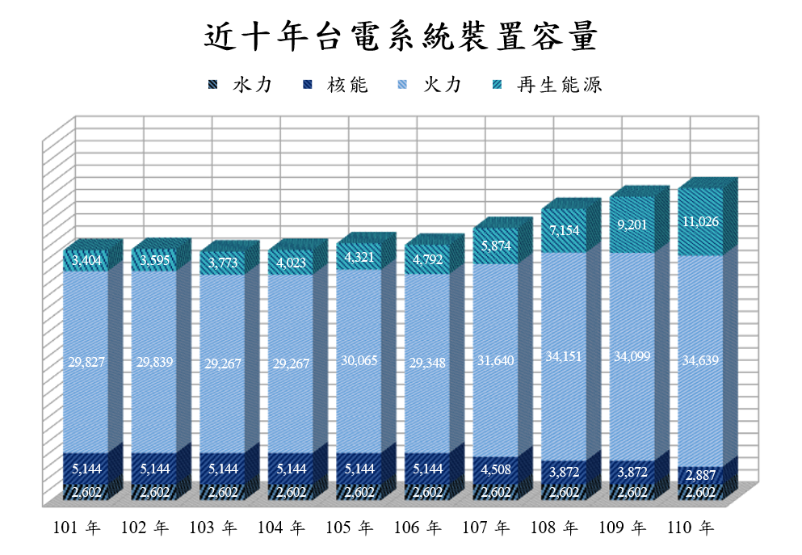

NPU of Science and Technology by MIS
NPU of Science and Technology by MIS
Roadster


NPU of Science and Technology by MIS

綠色能源一直是全球相當注重的議題，甚至還招開聯合國會議為此訂定 減少溫室氣體排放量條款，而溫室氣體排放元凶屬二氧化碳最多，因此近年 提倡低碳發電的「再生能源」逐漸為發展趨勢，由下圖表所示，台灣較新發 展的再生能源（註：水力發電發展較其他再生能源早一世紀）建置裝置容量 上漲快速，可知近年注重推廣再生能源為主力發電。
太陽能是利用太陽能板來發電，其面積大小可調使建置的範圍廣泛，且 陸海空皆可使用，大至飛機小至手錶，挪威甚至還效仿風力發電的離岸風機 開發離岸太陽能板，假設成功廣泛應用，將大幅提升太陽能的優勢。